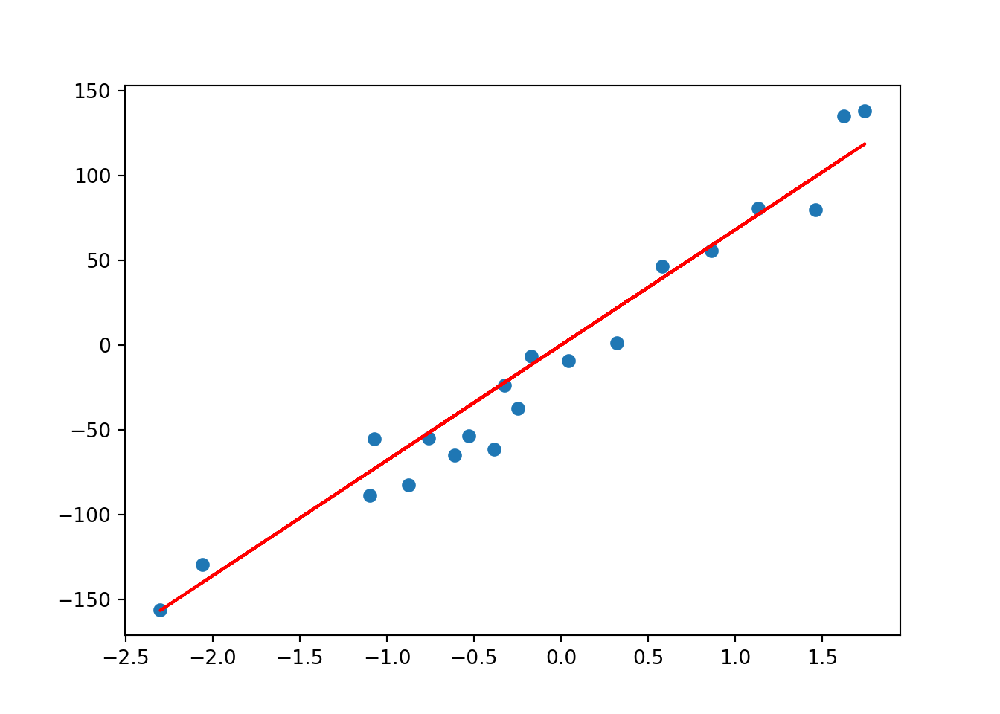
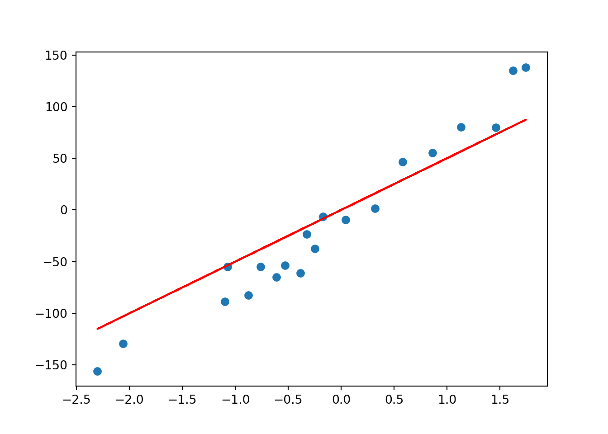

Before we dive into Ridge Regression, let’s first go through a Linear Regression model. Recall that the loss function for Linear Regression is:
\[min\sum_{i}^{n} (\hat y - y)^2\] The loss function for Ridge Regression is: \[ min \sum_{i=1}^{n} (\hat{y} - y)^2 + \lambda \sum_{i=1}^{m} w_i \] The added term in Ridge Regression acts as a penalty to Linear Regression. In other words, Ridge Regression introduces a small bias. Why? In return for the bias, we can achieve reduced variance. If the model has a high variance, it’ll probably not generalize well for unseen future data points.
Let’s see what this all means in action:
## Import packages
import pandas as pd
from sklearn.datasets import make_regression
from sklearn.datasets import make_regression
from matplotlib import pyplot as plt
from sklearn.linear_model import Ridge## Generate data with one coefficient fitted from a linear regression model
X, y, coef = make_regression(
n_samples=20,
n_features=1,
n_informative=1, # number of useful features
n_targets=1,
noise=20,
coef=True,
random_state=1
)
coef## array(69.1877114)lambda_value = 1
rr = Ridge(lambda_value)
rr.fit(X, y)## Ridge(alpha=1)w = rr.coef_
w## array([67.96344041])plt.scatter(X, y)
plt.plot(X, w*X, c='red')
As you can see, Ridge Regression (red line) is identical to Linear Regression when lambda_value = 1
lambda_value = 10
rr = Ridge(lambda_value)
rr.fit(X, y)## Ridge(alpha=10)w = rr.coef_
w## array([50.0738474])plt.scatter(X, y)
plt.plot(X, w*X, c='red')
Now, we see a worse fit (higher bias) but we expect to have a lower variance for new data points.